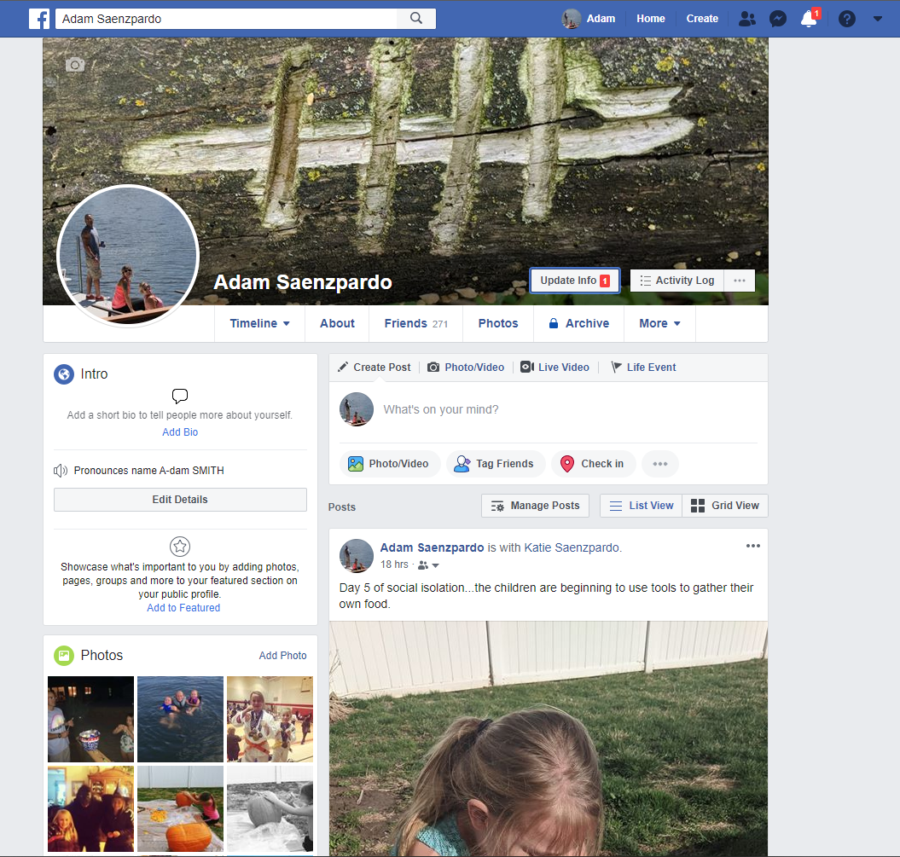
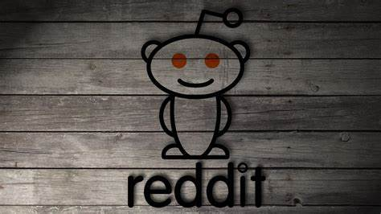
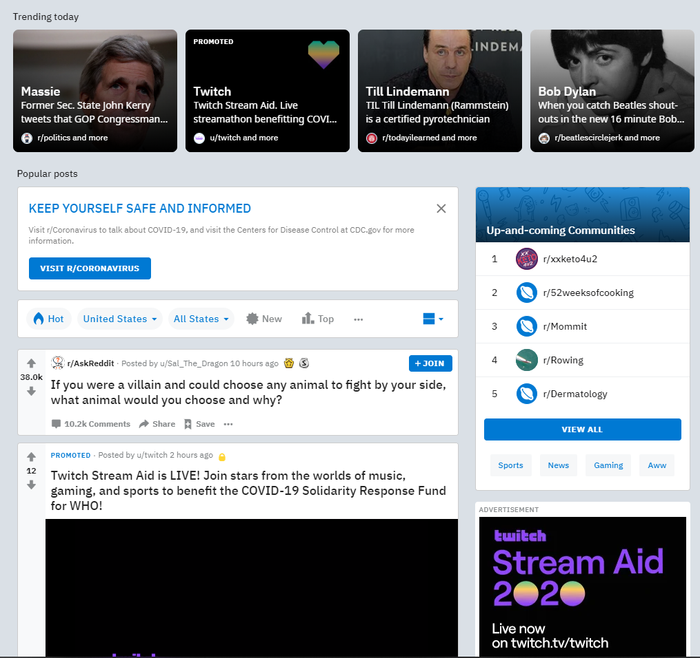

Facebook is a popular social media platform and was dreamt up in a Harvard dorm room in 2004 by Mark Zuckerberg and Eduardo Saverin. Cameron Winkelvoss, Tyler Winklevoss and Divya Narendra later accused Mark of theft of intellectual property
believing Mark had used their ideas to create a competing product. Facebook, Inc later settled out of court for shares in the company valued at roughly 300 million dollars at the launch of Facebook’s IPO. An estimated 2.5 billion people
all over the world account for Facebook’s active user base1. This has caught the attention of advertising groups, which is the only real revenue stream for the company.
Life Cycle
Since its inception, Facebook has continued to grow in population. Many users find it a good way to keep in touch with relatives, extended family and friends all over the world. The site features a “newsfeed” which can be catered to your specific
interests. When you create a profile, you can post updates about daily activities and “check-in” to businesses and places of interest. You can post videos, pictures and share other posts you may find interesting or newsworthy.
Improvement
Although improvements have been made to the site, it is generally not much different from it’s first launch. The page is free of “noise” with a white background and is easy to navigate.
Features
There have been, what I will call modules, added such as Facebook Marketplace. This allows users to post items for sale and see what others might be selling. In my own personal opinion, it has led the decline of Craigslist. Facebook messenger
was a large undertaking. It is a messenger service that allows you to instant message other users and even perform voice calls. It is so involved; you can use the messenger application on a mobile device to send and receive text messages.
Evolution

Privacy has recently become a concern. Facebook’s business model relies on developing a user profile. This can be used for directed advertisement based on brands you “like” or “follow” and is more likely to trigger impulse purchases. Facebook
now allows more control of privacy and targeted advertising. You don’t pay upfront for using the service. You pay with your data, which can be sold to third parties for targeted advertising.
Reddit

General Information
Reddit is described as the “front page of the internet.” Reddit is a large collection of forums where people can share news, communicate ideas, comment on the posts of other content creators and just browse feeds that are geared to your interest.
The site may seem confusing at first with it’s /r/ and u/user notations. Reddit is shorthand for “Read/Edit.” /r/ is a reddit “feed” and u/ notates a username. There are also “subreddits.” If you search the internet for “r/football” you
will see reddit discussion boards for football. Don’t get too excited if you’re reading this in America. It’s what the rest of the world considers football, or what you might call soccer.
Life Cycle
It was founded at the University of Virginia by college roommates Steve Huffman and Alexis Ohanian. The roommates came up with the idea during a brainstorming session after a previous idea had failed. Coded in the common Lisp language, it
was launched midyear 2005.
Improvement
Reddit was re-written in Python shortly after it’s launch and it has archived it’s open source repositories shortly after migrating is private servers to AWS, or Amazon Web Services. The site has only undergone one major design update and
it is currently one of the most popular web sites in the world.
Features
As stated in the video below, the predictive power of Reddit is incredibly accurate. This allows advertisers to cater advertising based on a digital profile of you. Targeted advertising makes up Reddit’s largest revenue base. Privacy concerns
are not the only controversy to plague Reddit. There are many subreddits that people find offensive or explicit. The company holds a firm stance on freedom of speech and has maintained the ideology to date. Elicit subreddits include “hate
pages” geared toward spreading ethnic, religious, body type and sexuality hate. There are also discussion boards encouraging pedophilia, under the table firearms sales, violent content and much more. If you can think of something terrible,
there’s most likely a Reddit for it.

Evolution
As Reddit continues to evolve, it becomes just as important to monitor threads for innapropriate or abusive content. Reddit has done extensive "remodeling" of it's policy to determine what is allowed under free speech and what content will be considered offensive. This continues to be a challenge today on where to draw the line.